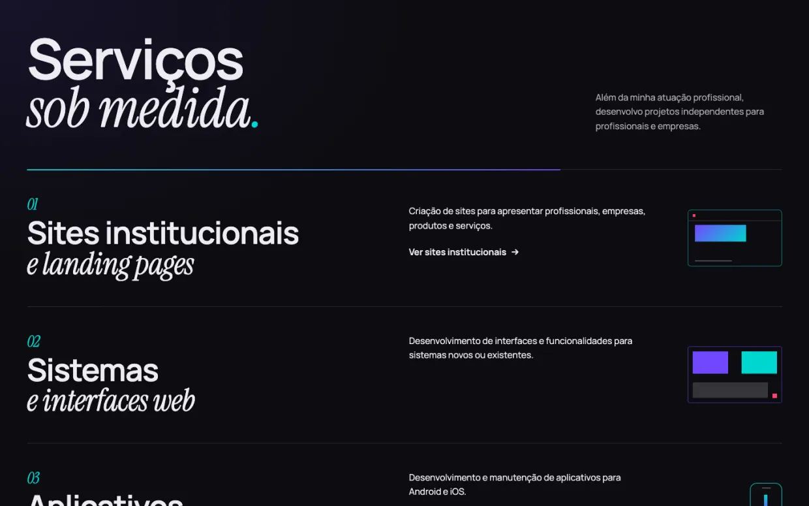
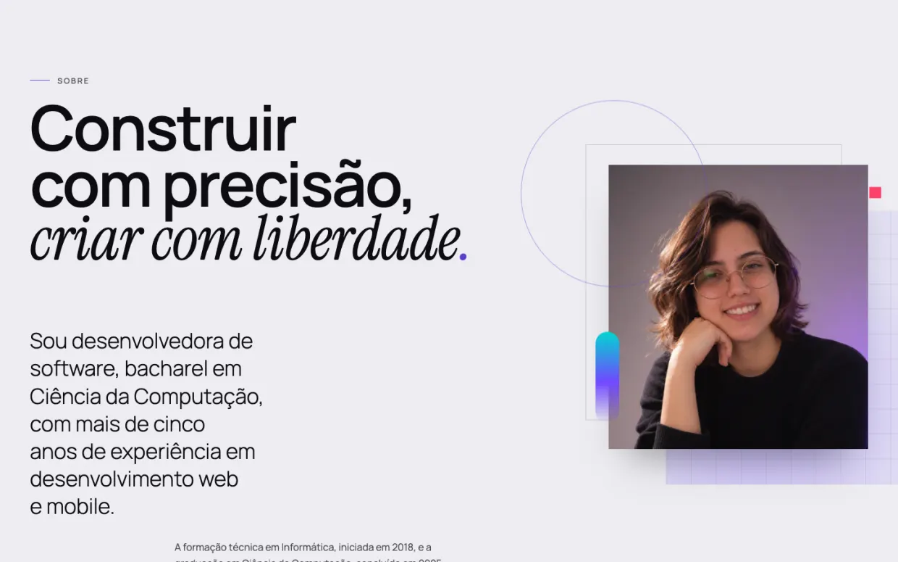
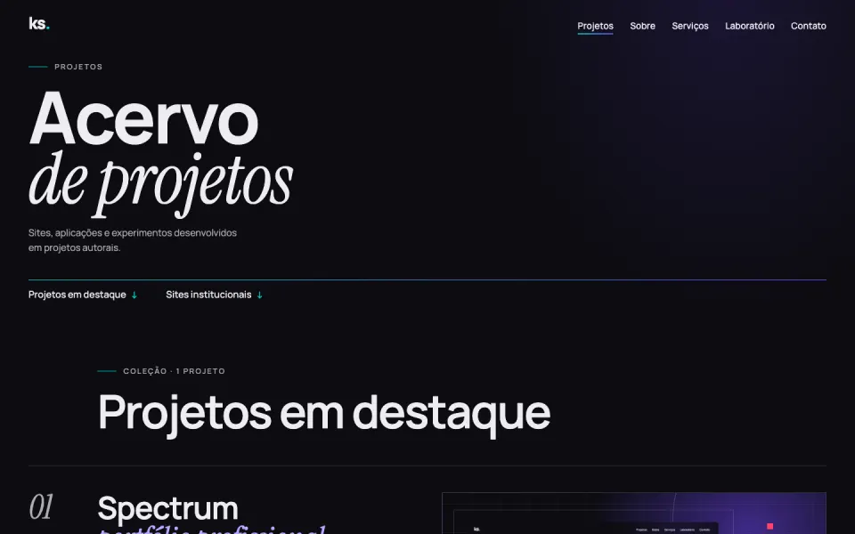
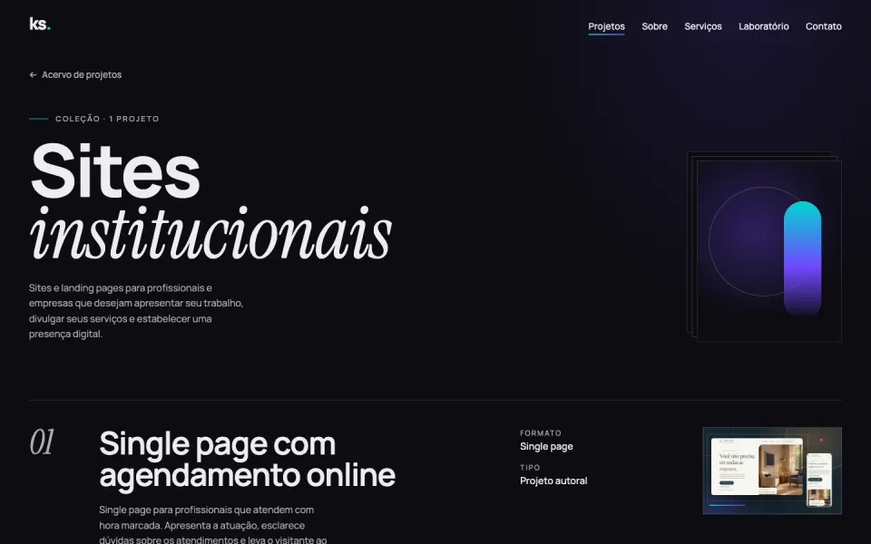
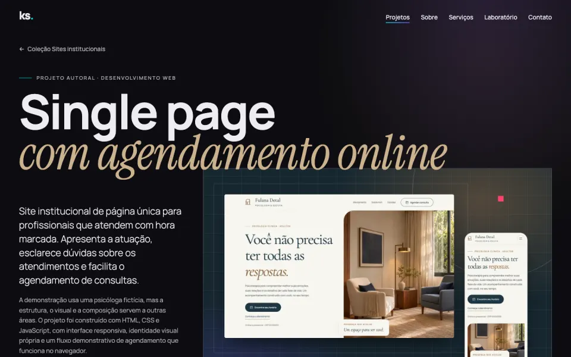
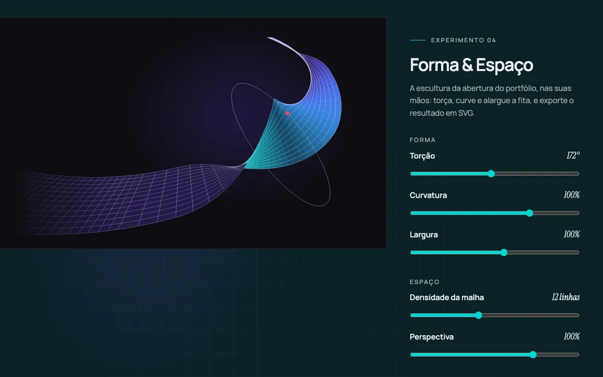
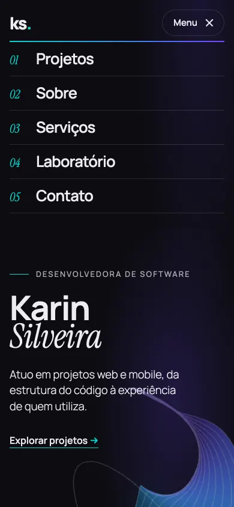
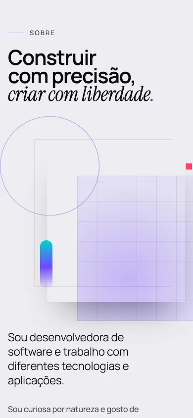
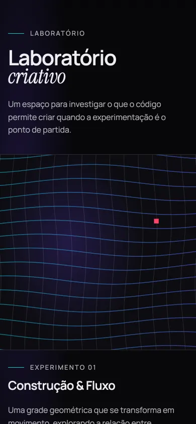

Projeto autoral · Design e desenvolvimento
Spectrum portfólio profissional
Desenvolvimento web e programação criativa.
Desenvolvi este portfólio para reunir minha trajetória profissional, apresentar meus projetos e explorar as possibilidades visuais da programação. O site foi construído com HTML, CSS, JavaScript e SVG, sem frameworks ou bibliotecas externas.


- Formato
- Site multipágina
- Autoria
- Direção de arte, design e desenvolvimento
- Tecnologias
- HTML, CSS e JavaScript
- Dependências
- Nenhuma
- Publicação
- GitHub Pages, via GitHub Actions
Entre estrutura e expressão
O desafio deste projeto foi reunir um currículo digital, uma apresentação de serviços e um portfólio autoral em um mesmo site, sem que uma dessas finalidades se sobrepusesse às demais.
Os estudos de caso permitem conhecer os projetos além de sua aparência, apresentando as tecnologias utilizadas, as decisões de desenvolvimento e os resultados obtidos. O laboratório complementa essa proposta com experimentos que podem ser explorados diretamente no navegador.
- Identidade profissional
- O nome e o posicionamento abrem a página; o retrato e a forma de trabalhar aparecem no Sobre.
- Currículo digital
- Experiência, formação, capacidades, mentoria e eventos, a partir de informações confirmadas.
- Oportunidades comerciais
- Quatro frentes de serviço, contato direto por WhatsApp e e-mail e um convite à conversa ao fim de cada página interna.

Identidade Spectrum
A identidade visual parte do conceito Construção & Fluxo. Elementos geométricos, grades e alinhamentos contrastam com formas orgânicas, curvas e movimento.
Obsidian e Porcelain compõem as superfícies escuras e claras do site. Ultraviolet, Aqua e Pulse aparecem em elementos gráficos, interações e pontos de destaque, com variações de cor quando necessárias para garantir o contraste do texto.
A tipografia combina Manrope, utilizada na maior parte da interface, com Instrument Serif, que confere uma expressão visual própria aos títulos.
- Obsidian
#0C0C1060% · Superfícies e profundidadeSobre Porcelain 16,73:1 · AAA - Porcelain
#EDEDF225% · Texto no escuro e ambientes clarosSobre Obsidian 16,73:1 · AAA - Ultraviolet
#7148FF8% · AssinaturaSobre Obsidian 3,79:1Sobre Porcelain 4,42:1 - Aqua
#00D6CF4% · Interação e fluxoSobre Obsidian 10,71:1 · AAASobre Porcelain 1,56:1 - Pulse
#FF426C3% · Tensão pontualSobre Obsidian 5,81:1 · AASobre Porcelain 2,88:1
- Estrutura · sem serifa
- Manrope, de 200 a 800
- Expressão · serifa
- Instrument Serif, regular e itálico
- Grade
- Moldura
- Órbita
- Cápsula de fluxo
- Acento

A identidade Spectrum acompanha as diferentes necessidades de cada página. Na homepage, os elementos gráficos e o movimento fazem parte da apresentação profissional. No acervo, a composição favorece a organização e a consulta dos projetos. Nos estudos de caso, o layout assume um caráter editorial, com espaço para imagens, informações técnicas e resultados.
Os fundamentos visuais permanecem os mesmos, enquanto a composição se adapta ao conteúdo. Cada projeto também pode apresentar sua própria identidade visual sem perder a conexão com o restante do portfólio.
-
Homepage · apresentação
-

Acervo · consulta
-

Coleção · organização
-

Estudo de caso · editorial
Código como matéria
A escultura apresentada na abertura do portfólio foi desenvolvida por meio de programação. Sua forma é definida por uma curva de Bézier tridimensional, a partir da qual são calculadas a largura, a torção, a perspectiva e a iluminação de uma fita geométrica.
A geometria é gerada durante o desenvolvimento e incorporada à página em formato SVG. Dessa forma, o navegador não precisa recalcular a escultura a cada visita, ficando responsável pela renderização, pelas animações e pelas interações.
O mesmo núcleo matemático é carregado no laboratório, onde a escultura passa a ser recalculada no navegador. No experimento Forma & Espaço, o visitante ajusta torção, curvatura, largura, malha, perspectiva, luz e cores, e pode exportar o resultado em SVG.
O laboratório explora outras aplicações da programação criativa. Seus quatro experimentos permitem transformar uma grade geométrica, manipular fontes de luz colorida, alterar as proporções de uma composição tipográfica e moldar a própria escultura da abertura.

Engenharia por trás da experiência
A escolha por tecnologias nativas da web permitiu desenvolver todas as funcionalidades do portfólio sem recorrer a frameworks, bibliotecas externas ou ferramentas de compilação.
Os estilos compartilhados concentram os fundamentos da identidade visual e os componentes reutilizados entre as páginas. O JavaScript é organizado de acordo com as responsabilidades de cada funcionalidade, como navegação, animações e experimentos interativos.
A publicação é automatizada com GitHub Actions e GitHub Pages. Apenas os arquivos necessários ao funcionamento do site são incluídos no artefato de publicação.
- 0 dependências
- 0 etapas de build
- 2 folhas de estilo
- 4 módulos JavaScript
- Estrutura
- Cabeçalho e rodapé escritos em cada página e caminhos relativos, o que permite publicar o site em qualquer endereço.
- Estilo
- Cores como variáveis (primitivas e semânticas), ambiente claro trocado por uma classe, grid de 12 colunas e medidas que acompanham a tela e o zoom.
- Segurança
- Política de segurança de conteúdo (CSP) em todas as páginas, só com recursos do próprio site e sem
unsafe-eval. Trusted Types obrigatórios: o JavaScript não insere HTML porinnerHTML. - Publicação
- Permissões mínimas em cada etapa do GitHub Actions, com leitura na montagem e escrita só no deploy, e ações fixadas por hash de commit.
Uma web para diferentes contextos
A composição do portfólio se adapta às dimensões da tela. Em dispositivos móveis, a escultura, a navegação, os projetos e os elementos interativos recebem ajustes próprios de layout e comportamento.
O conteúdo principal permanece acessível sem JavaScript. A navegação pode ser utilizada pelo teclado, e as animações respeitam a preferência por movimento reduzido do sistema operacional.
A escultura também possui um controle de pausa, permitindo interromper seu movimento sem comprometer a experiência de navegação.
-

Menu
-

Sobre
-

Laboratório
Expressividade e eficiência
Um dos objetivos do desenvolvimento foi preservar a riqueza visual do portfólio sem comprometer seu carregamento.
As imagens utilizam o formato WebP e diferentes resoluções de acordo com a tela. As fontes são hospedadas localmente, as animações contínuas são suspensas quando saem da área visível e os experimentos são atualizados conforme a interação do visitante.
As análises realizadas na versão publicada da homepage registraram 100 pontos nas quatro categorias do Lighthouse, tanto no celular quanto no computador. O primeiro acesso transferiu 189 KB em 15 requisições.
- 0–49
- 50–89
- 90–100
- 100 de 100 Desempenho
- 100 de 100 Acessibilidade
- 100 de 100 Práticas recomendadas
- 100 de 100 SEO
- First Contentful Paint
- 1,0 s
- Largest Contentful Paint
- 1,1 s
- Total Blocking Time
- 0 ms
- Cumulative Layout Shift
- 0,047
- Speed Index
- 1,2 s
Moto G Power emulado, 4G lenta e processador quatro vezes mais lento, simulados · Lighthouse 12.8.2
- 100 de 100 Desempenho
- 100 de 100 Acessibilidade
- 100 de 100 Práticas recomendadas
- 100 de 100 SEO
- First Contentful Paint
- 0,3 s
- Largest Contentful Paint
- 0,3 s
- Total Blocking Time
- 0 ms
- Cumulative Layout Shift
- 0,001
- Speed Index
- 0,4 s
Área de trabalho emulada, conexão de 10 Mbps simulada · Lighthouse 12.8.2
Página inicial publicada, analisada em 25 de novembro de 2026. Medição de laboratório.
189 KB no primeiro acesso
- Imagens
- 86 KB
- Fontes
- 55 KB
- HTML, CSS, JavaScript e ícones
- 48 KB
Esses resultados correspondem às condições dos testes realizados, análises de laboratório simuladas, e não representam necessariamente a experiência de todos os visitantes. Dados de campo, como os do Chrome UX Report, não foram consultados.
Fazer uma nova análise no PageSpeed Insights (abre em nova aba)Inteligência artificial como ferramenta
A inteligência artificial fez parte do desenvolvimento deste projeto, desde a exploração de propostas visuais até a implementação, refatoração e validação do software.
O processo envolve definir requisitos, avaliar alternativas, questionar soluções, revisar resultados e decidir quais implementações serão incorporadas ao projeto.
Utilizo a IA como ferramenta de desenvolvimento, mantendo sob minha responsabilidade a direção do projeto e as decisões técnicas e criativas.
Requisitos
Autora
O que o projeto precisa ser e fazer.
Alternativas
Com IA
Propostas visuais e técnicas para comparar.
Implementação
Assistida por IA
Código, refatoração e validação do software.
Revisão
Autora
Questionar as soluções e revisar os resultados.
Decisão
Autora
Escolher o que entra no projeto.
Explore o projeto
-
Código
Ver o repositório (abre em nova aba)Código-fonte completo no GitHub, em nova aba.
-
Laboratório
Explorar o laboratórioTrês experimentos interativos, na página inicial.
-
Acervo
Ver todos os projetosVolta ao acervo, com todos os projetos publicados.
Quer conversar sobre este projeto?
Entre em contato para falar sobre projetos, oportunidades de trabalho ou parcerias.